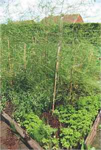
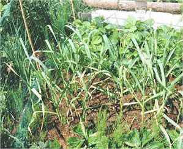

Companion Planting
It has long been known that some plants grow better in the presence of others, than if they grow alone. Sometimes the effect of a neighbour may

be purely physical; for example providing shelter, keeping the soil moist around the roots, providing support. or attracting insects for pollination.One species may benefit another because its root system loosens the ground, or it may excrete insect or disease repellant chemicals which keep neighbouring plants free from attack. Some of these effects have been explained by analysis of root secretions and study of their efficacy as natural pesticides. Many traditional 'companions' have not been explained in this way, but practical experiments show that they do work!
Some plants grow well together because the root at different levels in the soil and so do not compete for nutrients at the same level. Legumes are unique in companion planting, due to their ability to convert gaseous nitrogen in to salts which can be utilized not only by the legume, but by the surrounding plants. Clover (which is a legume) in grassland improves the yield of grass, and lupins in a flower border help feed other flowers there.

The most commonly known pair of companions seem to be onions and carrots. They are mutually beneficial in that the carrot repels the onion fly and the onion repels the carrot fly; or the odours they give off in combination confuses *both* flies. Chives growing under roses helps overcome black spot and increases the roses', perfume. Tagetes marigolds inhibit whitefly on tomatoes and act as insect repellants in a lot more situations too.The two photographs show two situations in the garden, where companions are being used. The asparagus bed is surrounded by parsley, and the strawberries have garlic growing in the middle of them.


The Castle

Brigid's Garden

Moyra's Web Jewels